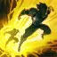
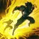
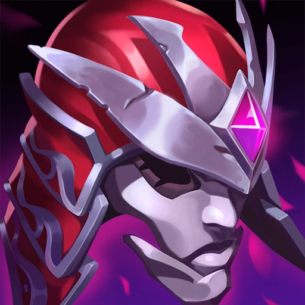
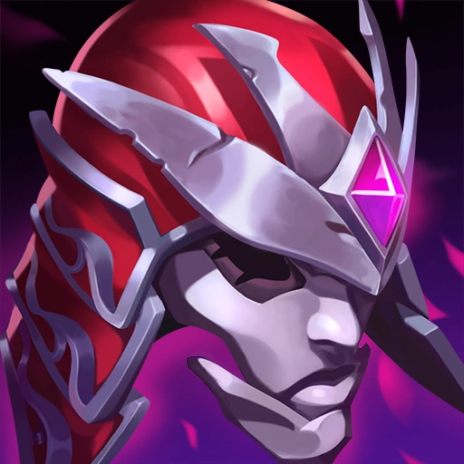

ZYRA GUIDE PATCH 12.19
52.56% WR
WHY ZYRA?
By playing Zyra you have infinite pressure on lane. If you land a full combo on lane as Zyra and you have a half-decend ADC it's 99% of the time a guaranteed kill. Although Zyra is a support she can easily carry games as she most often can outdamage even her ADC while also bringing a lot of CC into the picture. Zyra's pressure in team fights is unequaled by most supports. She can CC the whole enemy team with E as it passes through enemies and then knock-up them with R while dealing loads of damage.
The main drawback of playing Zyra is that she is very squishy and very immobile which means that if she is caught out of position she is an easy target. Also if she falls behind she cannot provide peel or engage.
 

RUNES
Zyra is a strong user of Electrocute and she can proc it easily from level 2 with Q/E→W→AA. Each hit from a different plant counts as 1 hit towards Electrocute, so you can proc it with 3 plants. Zyra can also play Arcane Comet for a more poke oriented playstyle. This playstyle pairs nicely with Scorch for a strong poke lane, especially if are laning with Miss Fortune or Caitlyn.
RECOMMENDED SKILL PATH
| Q | Q | Q | Q | Q | ||||||||||||||
| W | W | W | W | W | ||||||||||||||
| E | E | E | E | E | ||||||||||||||
| R | R | R |
I would recommend starting with Q so that you can poke with Passive+Q during laning phase. You can start with E too if you get in an early fight and need CC. At level two I would get W 99% of the time because as Zyra you rely on your plants and not having any makes your poke weaker while also making you more vulnerable to an all in.
After you get Q,W and E you should max E for the root duration. You should max Q first only if you need to do a lot of csing. After E you should max W. One important thing to know about Zyra is that her plants scale with level and not with skill points, therefore maxing Q doesn't mean that your Q plants deal more damage. The reason you max Q last is because you will not be hitting Q's often and you will use it more as a tool to get ranged plants.
ITEMIZATION
Recommended item path:


 

For your starter items you should get Spellthief's Edge and 2 pots and then you can either get your 300g boots or an Amplifying Tome to start building Lost Chapter which is a big powerspike. I usually get my 300g boots, finish Liandry's then finish Sorcerer's Shoes. Zhonya's is very useful on Zyra as you are a squishy immobile mage. Whatever comes after Zhonya's is very matchup dependent. You can build anything in any order depending on how the match is going and what the team needs.
Other item options:

One viable option, though in my opinion worse than Liandry's Anguish is Luden's Tempest. You should only go Luden's with a burst build similar to what you would build on Lux and maybe with Inspiration First Strike as your primary rune. It can be decent agains a squishy enemy comp but I would not recommend it.
Probaby my number one choice for when you are behind but still want to have an impact on the game is Moonstone Renewer. Zyra can easily proc it often with her many AOE abilities. Although this is more of an enchanter item it does not make Zyra's damage obsolete at all as she has very good base damage.
Imperiate Mandate is a solid item choice for Zyra and works best when paired with Ryilai's. It is cheap and gives good stats but it's not a fast power spike since it requires Rylai's to be fully effective. All in all it is a solid choice as a mythic on Zyra for a more utility based build.
Void Staff is a late game item against magic resist builds that brings a lot of bang for your buck. It's magic penetration is really effective against MR comps or lots of Merc Treads and it can bring your damage late game to a whole another level. One drawback is that while it gives more kill power, it leaves you really squishy.

Zyra is a champion that heavily benefits from the passives of her items and doesn't really need a lot of AP. Rabadon's Deathcap is a pretty useless item on Zyra and I cannot see any situation where Rabadon's would be an optimal item. You will get more benefits by building another item.